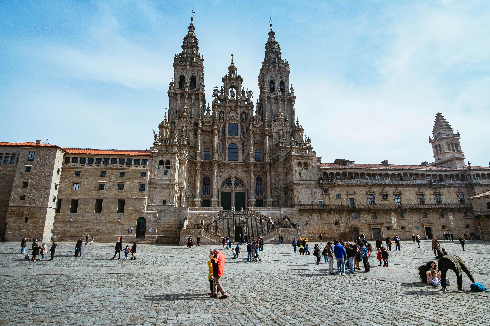

8 rutas jacobeas
Desde el Camino Francés clásico hasta los caminos más remotos y auténticos. Encuentra la ruta que mejor encaja con tú.
Orientación personalizada
Cuéntanos tu nivel de condición física, el tiempo disponible y tus preferencias. Nuestros expertos te orientarán sin compromiso.
Si tienes menos de 10 días, el Camino Inglés o Portugués (tramo final) son tu mejor opción.
El Camino Francés o el Portugués son los más recomendados para quienes se estrenan como peregrinos.
El Camino Primitivo o la Vía de la Plata son para quienes buscan un reto físico y la máxima soledad.